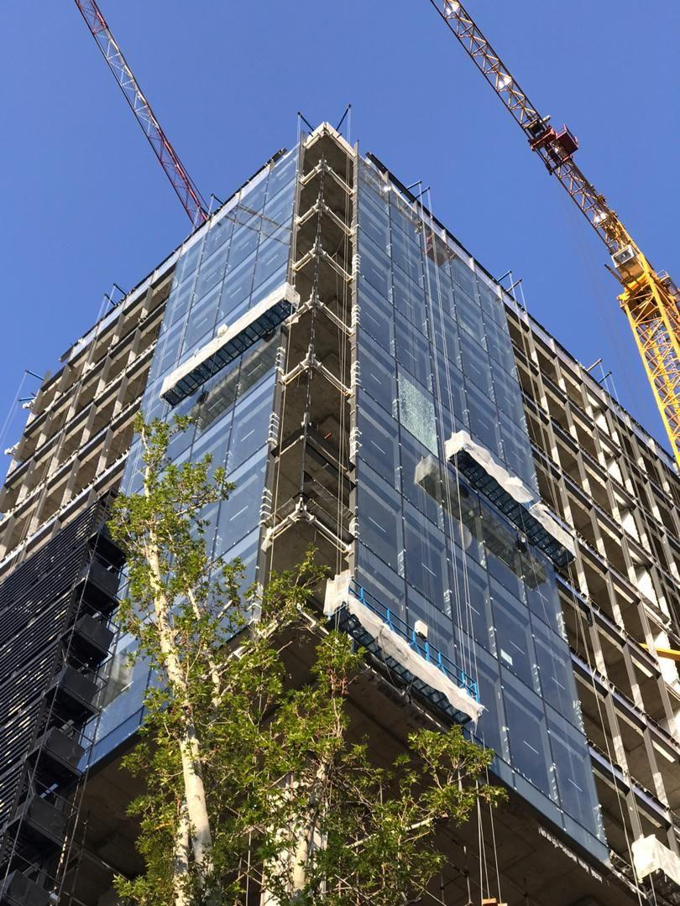

اجاره کلایمر معمولا به صورت ماهیانه محاسبه می شود و با یک بار نصب و آموزش رایگان انجام می گیرد. دستگاه های جایگزین داربست ایمن کلایمر با طراحی مهندسین مجرب این مجموعه و تنوع سبد های نما قابلیت تنظیم از 1 متر تا 8 متری و سبد های تلسکوپی پشت بام در هر نوع نمای ساختمان و یا بغل کار و پشت کار که همسایه،اجازه نصب داربست را نمی دهد جایگزین داربست قابل استفاده می باشد و بدون هیچ مزاحتمی به همسایه ها و بدون اشغال هیچ جایی از پشت بام همسایه و خیابان و مجاور ساختمان قابل نصب می باشد. کلیه دستگاه های ایمن کلایمر چه از نوع کلایمر دستی و چه از نوع کلایمر برقی مجهز به پاراشوت و ترمز گریز از مرکز می باشد که ایمینی دستگاه های کلایمر را کامل می کند و به لطف خدا و تکنولوژی بالای دستگاه های ایمن کلایمر در طی بیش از 15 سال سابقه فروش کلایمر جایگزین داربست هیچ حادثه جانی و مالی رخ نداده است و از هر طرف (چپ و راست) دستگاه دو عدد سیم بکسل8/3 میلیمتری رد شده است به نقطه ی پارگی هر یک از سیم بکسل ها 4500 کیلو گرم می باشد که مقاومت سیم بکسل ها چند برابر باری است که در جایگزین داربست نیاز است.

:
خیالتون راحت
تمام کلایمر های اجاره ای ما بعد از هر بار استفاده توسط مهندیسین مجرب سرویس شده و دوباره تحویل مشتری داده میشود